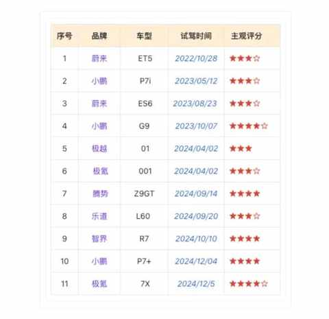
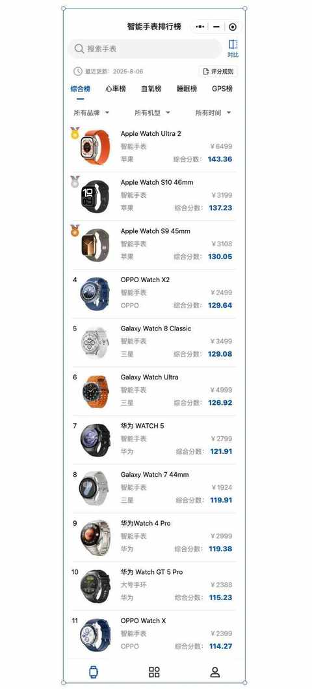
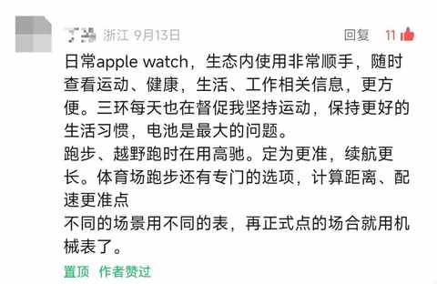

为什么说放弃Apple Watch很容易，而真正考验人的是下一块智能手表的选择？
一、决定放弃很容易
上个月有感于用了 6 年的 Apple Watch 一直以来的几个痛点，下定决心要放弃使用 Apple Watch，甚至当天就把健康APP 里面的数据做了备份。
随后也把当时的所思所想整理成一篇文章，没想到获得了不错的反馈，也有不少各品牌运动手表的运动在留言区分享了自己真实的使用体验与感受。

终于下定决心！用了6年Apple Watch，我为什么决定放弃它？
一个多月后，才发觉很多时候放弃一件事，放弃某个物件真的很容易。
难的永远是下一个选择，下一个决定！
二、如何选下一块 智能手 表
1️⃣ 选车和选表不同
事情似乎又到了我在 2023 年上半年想换车的情况，当时花了一年多的时候，密集试驾了多个国产品牌的 11 款车。
前比亚迪车主，聊聊近两年试驾的 11 款自主品牌纯电车：小鹏、蔚来、极氪……

但是，选择智能手表和选车有很大的不同。
选车除了可以看各种评测视频之外， 几乎 所有已经上市的车辆都能去实地看，都能约体验和试驾，在试驾之后基本对某款车就有了一个直观的印象与感受。
经过多款车对比之后，需求只会越来越明确，最终做出的选择也更贴近自身的真实需求，误判和后悔的概率很低。
而选择运动手表虽然也能 看各种评测视频，部分手表能去线下摸摸简单看看 UI 和功能设置，但你无法把手表拿出去跑步体验和感受，你必须花钱买了之后才能做这些操作，等到那时候再觉得不合适就真的是悔不当初了！
在仔细看了一些博主的各种运动手表的评测视频之后，发现几乎 99% 的博主都是运动频次不高的人群，那么他们对手表运动功能的理解便有一定的局限性。
好在，经过一段时间的摸索，我也有了一些新的发现和收获。
2️⃣ 发现一个小程序：智能手表排行榜
里面列举了市面上主流品牌的多款智能手表的排行，有足够多的维度去评估。

3️⃣ 留言区的收获：双持，不同场景戴不同的手表

虽然一个多月前下定决心放弃 Apple Watch，但现在又决定不完全放弃。
有点纠结但又自洽了很多，接下来会审慎的选择下一款长期在跑步和徒步时候佩戴的智能手表。
三、结语
接下来会专注备赛，把接下来的两个半马和一个全马都顺利完赛。
待比赛都结束之后，会仔细评估下多款智能手表，再做决定，在买好后使用一段时间会再分享一个使用反馈给大家。
也希望大家在留言区多多分享自己的智能手表使用体验。
近期文章
运动后总酸痛？这4个家常小物件，是放松肌肉的“隐形神器”
我的电车购买逻辑：用100kWh大电池的“确定性”，替代三电优化的“不确定性”
从前，有一个笨小孩，他的武器叫“笨功夫”
中年人提高跑量的意外之喜：最大摄氧量首次突破62！
告别选择困难症！翻遍留言区整理的宝藏跑步装备清单！
一双 “问题” 跑鞋带来的顿悟：问题的答案藏在细节里……
没想到送老婆去面试，居然是一次 “班味” 之旅
开了7年混动后投向纯电9个月，一个中年新能源车主的生活有了哪些新变化？
车型太多，普通人怎么选新能源车？分享一个更符合普通人的选车方法！